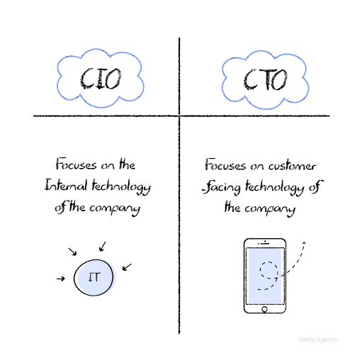
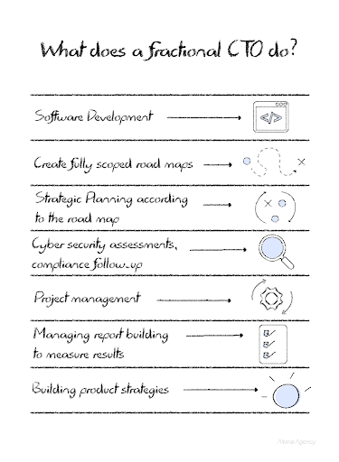

What is a Fractional or Virtual CTO, and why does your business might be needing one
May 27, 2022
Nowadays, outsourcing is becoming more and more popular in the business world. Especially for those businesses that operate in a fast, dynamic, and constantly changing environment.
In the tech world, many businesses thrive in a fast-paced environment and need constant support from agile teams to achieve goals and objectives. It is because of this that the term “Fractional CTO” arose, and in this blog post, we are going to explain what a Fractional CTO is, what their duties are, and why your business might be needing one.
From CIO to CTO
In the beginning companies in the tech industry, technology was very incipient, and therefore, there was not a lot of specialization when it came to tech roles. Before the CTO was born, there was only one person in charge of internal and external technologies within the company, and that was the CIO.
CIO stands for Chief Information Officer, and its main role is to ensure an efficient administration of the assets of a company, as well as the structures and processes inside the company’s department of technology.
The CIO is responsible for managing IT efficiently and making sure that all the IT processes that happen inside the company are well executed.
As time passed by, tech companies realized that they needed someone who besides keeping IT management on track, could also plan strategies and analyze scenarios to ensure that the processes that were being made inside the company contributed to increasing ROI and performance. This is how the CTO was born, which stands for Chief Technology Officer.
According to (Frankenield, 2021), “Despite the titles, the CTO has more of an outward-looking, strategic planning role, while the CIO has more of a technology-focused, operational role”.[1]
A fractional CTO is a CTO that works for a fraction of the time any other employee would in a company, and this is because a fractional CTO is outsourced and is not a fixed hired employee in the company.
What does a fractional CTO do?
Another essential thing a CTO can bring to the table is facilitation of communication between the project team and its leaders. This is a game changer because it will allow your projects to be more efficient and improve the overall productivity of your teams. On the other hand, it will contribute to SMART goal setting, adequate action planning, and maintain the whole team informed about the next steps so that time is not wasted.
What are the benefits of hiring a Fractional CTO?
A fractional CTO is ideal for growing companies or start-ups because it allows for leveraging the company's goals in a fast-paced environment. However, hiring a fractional CTO for specialized projects that need proper management and fast development is also very helpful. The truth is that any type of company can benefit from hiring a fractional CTO, and that is because their role is highly rotational, which means that they get to work in several environments in a short period.
According to (Esteemed Inc., 2022), “Fractional CTOs get greater exposure to more organizations, more teams, more talent, and more projects than if they remained at a single company for the entirety of their career. Your business benefits from this, and by teaming up with a fractional CTO, you’re positioning your organization to adapt to emerging technologies like AI, for example.”[2]
So, a fractional CTO is an ideal asset when a company needs leadership and management to either create or improve processes for growing companies, to ensure high-quality results and ensure long-term growth. Also, it is a great way of having someone with lots of experience lead the team for a smarter price than other types of CTOs.
If you’re looking to hire a fractional CTO, look no further
At Alteria, we offer this and other services that will help your company grow with a steady and solid base. Don’t forget to check our “Services” section to know how Alteria can help you achieve your business goals with a fractional CTO, among other services.
Citations
[^1]: Why Chief Technology Officers (CTOs) Matter. Investopedia, https://www.investopedia.com/terms/c/chief-technology-officer.asp. Accessed on May 16, 2022.
[^2]: Should Your Business Hire a Fractional CTO? https://www.linkedin.com/pulse/should-your-business-hire-fractional-cto-esteemed. Accessed on May 19, 2022.
CTO . Startup